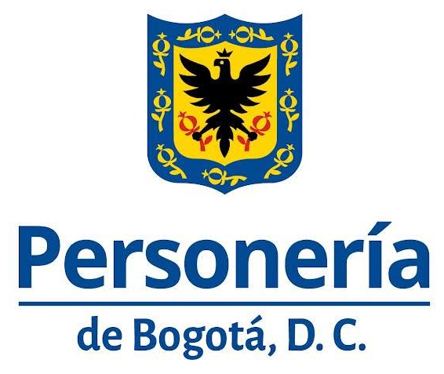
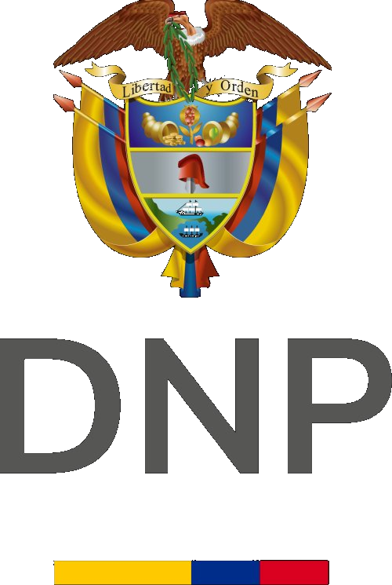
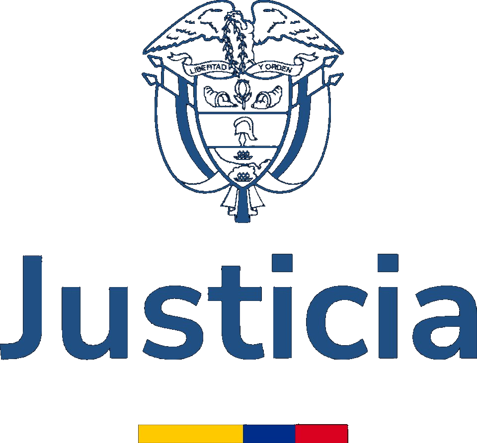

Organiza: Personería de Bogotá D.C.
Jueces de Paz — Diálogo Internacional Andino · Colombia · Ecuador · Perú
"De las raíces más profundas nace la paz verdadera"

Personería de
DNP
Ministerio de JusticiaPara empezar
Si nunca has oído hablar de la figura, esto es todo lo que necesitas saber antes del congreso. Pasa el cursor (o toca) las palabras subrayadas para ver su significado.
Justicia de paz en los Andes
El congreso surge del diálogo preparatorio andino (Workshop del 26 de marzo de 2026), donde Colombia, Ecuador y Perú compararon sus modelos, cifras y desafíos en torno a la justicia comunitaria de paz.
Programa oficial
Una jornada académica completa y abierta al público: conferencias magistrales, tres paneles internacionales y un cierre artístico.
Quiénes participan
Toca cada tarjeta para ver el perfil completo. Puedes filtrar por país o por tipo de participación.
Programa académico
Abre cada panel para conocer sus participantes, temas y la pregunta orientadora del debate.
"¿Cuál es el equilibrio adecuado entre la legitimidad comunitaria y las garantías jurídicas mínimas?"
"¿Cómo integrar la justicia de paz dentro de una estrategia amplia de acceso a la justicia sin perder su naturaleza comunitaria?"
"¿Cómo garantizar sostenibilidad y dignificación del rol sin convertir la figura en un cargo tradicional?"
Antecedente · 26 de marzo de 2026
Antes del congreso, las delegaciones de Colombia, Ecuador y Perú se reunieron en un workshop de tres salas temáticas que construyó la agenda del 8 de julio.
El Workshop "Reflexión Andina sobre la Justicia de Paz" fue convocado por la Personería de Bogotá como espacio preparatorio del congreso. Reunió a las tres delegaciones en salas de trabajo simultáneas: aspectos formales y reglamentarios (Sala 1), convivencia y legitimidad social (Sala 2) y fortalecimiento institucional (Sala 3).
Los resultados — logros, dificultades y propuestas — fueron sintetizados en la Plenaria Final y constituyen el insumo técnico directo para los paneles del congreso.
Puedes descargar la relatoría integral del workshop más abajo. 👇
Biblioteca del congreso
Preguntas frecuentes
Escríbenos tu duda o comentario sobre el congreso. Al enviar, se abrirá tu correo con el mensaje listo para la Personería de Bogotá.
Dónde y cuándo
Campus principal · Bogotá D.C.
Parada de SITP más cercana: Carrera 9 (Kr 9 – Cl 73), a 2 min a pie del campus.
Corredor Calle 72 (Av. Caracas) y estaciones de Avenida Chile, a corta distancia. Tarifa aprox. $2.950.
Si vienes en carro, hay parqueaderos públicos a pocos minutos a pie. Te recomendamos llegar temprano (el registro abre a las 7:30 a.m.).